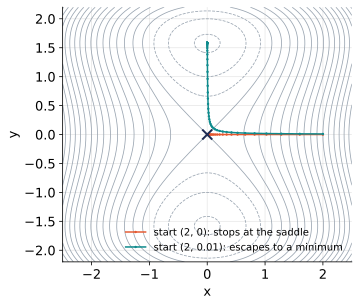

Mini-batch SGD at a constant rate reaches the reference loss quickly, then keeps jumping in a band 30% wide for the rest of training. Which single change narrows the band?
| Airfoil data, reference run | Diagnosis |
|---|---|
| Batch, rate 0.01: loss 152 after 200 epochs | slow |
| Batch, rate 1.0, above the edge 0.948 | diverged |
| SGD, rate 0.3: last 20 epochs spread 2.95 | noisy |
| Momentum, rate 0.001: loss 125 | slow |
| Unscaled, rate 1e-7: loss 4,193; 1e-6 diverged at epoch 123 | slow, diverged |
Least squares on 1,200 training rows; the yardstick every run was judged against.
Warm-up and step decay cut the noisy run's spread from 2.95 to 0.014.
f(t a + (1 − t) b) ≤ t f(a) + (1 − t) f(b) for all a, b and t in [0, 1]
Twice differentiable: convex exactly when f″ ≥ 0 everywhere, or in several variables when the Hessian has no negative eigenvalue anywhere.
On a convex loss every local minimum is a global minimum, and a small enough step of gradient descent reaches it. Least squares and logistic regression are convex in their weights. A network's loss is not.
Lower than its neighbours, higher than the best point. Descent stops there.
Gradient zero, curving up one way and down another. In many dimensions, saddles far outnumber minima.
A wide region where the gradient is close to zero. Steps become tiny; the run looks converged and is not.
The charity's analyst fits a logistic regression twice, from two different starting weights, with a small enough step. Both runs stop. What can she conclude about the two end points?
The Hessian H holds the second partial derivatives: Hᵢⱼ = ∂²f / ∂wᵢ∂wⱼ. It is symmetric.
f(w + d) ≈ f(w) + ∇f · d + ½ dᵀ H d
Along an eigenvector with eigenvalue λ, the function curves like ½ λ t².
| At a critical point, eigenvalues | Kind |
|---|---|
| all positive | minimum |
| all negative | maximum |
| both signs | saddle |
| some zero | the test cannot tell |

On the axis the y-component of the gradient is exactly 0: descent walks into the saddle at (0, 0).
From y = 0.01 it ends at (0, 1.581), a minimum (√2.5).
At a point where the gradient of a two-weight loss is zero, the Hessian is [[3, 0], [0, −0.2]]. The run has stopped there. What should the analyst say?
1 − 2/κ per step, with κ = λ_max / λ_min, the condition number.| Lab 5.1, airfoil data | κ |
|---|---|
| Raw features | 2.7 × 10¹¹ |
| Standardised features | 12 |
Solve H d = −∇f, then w ← w + d.
On a quadratic it lands on the minimum in one step, whatever κ is.
H has n² entries: for a million weights, a trillion. At a saddle a Newton step goes towards the saddle, not away. Training uses first-order methods; Newton is the yardstick.
A convex quadratic loss has curvatures 0.5 and 50. The analyst runs plain gradient descent at steps 0.01, 0.039 and 0.041. What does she see?
labs/problem_sets/PS6.py.cd labs
uv run python problem_sets/check.py PS6Every local minimum is global. Least squares and logistic regression are convex; networks are not.
All positive: minimum. Mixed: saddle. Stopping is not proof of a minimum.
The steepest curvature bounds the step; the condition number sets how many steps.
Hand in Problem set 6. Week 7 makes the losses you will train in the capstone safe to compute.